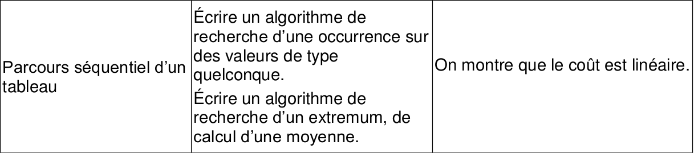

CH8 : Parcours séquentiel d'un tableau⚓︎
Programme officiel"

Les algorithmes du chapitre sont à travailler et à apprendre. Ils sont souvent utilisés comme "briques" de base pour des algorithmes plus compliqués. Ils sont de plus au programme de l'épreuve pratique du Bac (exercice 1).
1. Rappel sur la façon de parcourir les éléments d'un tableau⚓︎
1.1 Parcours par éléments⚓︎
Savoir faire
On utilise une boucle for en itérant sur les éléments en utilisant le mot clé in.
>>> noms = ['toto', 'tata', 'titi']
>>> for elt in noms:
print(elt)
toto
tata
titi
1.2 Parcours par indice⚓︎
Savoir faire
On utilise toujours une boucle for, mais on itére sur les indices en créant un itérable à l'aide de la fonction range. Pour un tableau de longueur n, range(len(tableau)) renvoie un itérable allant de 0 à n-1 par pas de 1.
>>> noms = ['toto', 'tata', 'titi']
>>> for i in range(len(noms)):
print(noms[i])
toto
tata
titi
2. Recherche d'une occurrence⚓︎
Le terme occurrence signififie présence. Par exemple, il y a 2 occurrences de la lettre a dans le tableau ['a', 'v', 'a', 'n', 'c', 'e'].
2.1 Compter le nombre d'occurrences d'un élément dans un tableau⚓︎
À connaître
La fonction nb_occurrence prend en paramètres un élément valeur et un tableau tab non vide. Elle renvoie le nombre entier compteur correspondant au nombre d'occurrences de valeur dans tab. Si valeur n'est pas présent, la fonction renvoie 0.
On utilise une boucle for pour parcourir l'ensemble du tableau :
def nb_occurrence(valeur, tab):
compteur = 0
for elt in tab:
if elt == valeur:
compteur = compteur + 1
return compteur
Tests de la fonction :
>>> nb_occurrence(4, [8, 4, 2, 5, 4, 4])
3
>>> nb_occurrence(15, [8, 4, 2, 5, 4, 4])
0
Remarque :
La méthode count fait le boulot : ma_liste.count(valeur) renvoie également le nombre d'occurrences de valeur dans ma_liste. Mais dans le cours, on n'utilisera pas ces méthodes "built-in" pour construire les fonctions demandées. Nous on s'intéresse à l'algorithme pas au résultat (même si celui-ci est important).
2.2 Connaître d'indice de l'occurence d'un élément dans un tableau⚓︎
À connaître
La fonction index_occurrence prend en paramètres un élément valeur et un tableau tab non vide. Elle renvoie l'indice i_occ de la première occurrence de valeur dans tab. Si valeur n'est pas présent, la fonction renvoie None.
On va ici utilisé un boucle while. Cela permet de ne pas parcourir l'ensemble du tableau si valeur est présent dans tab.
def index_occurrence(valeur, tab):
trouve = False
i_occ = None
i = 0
while trouve == False and i < len(tab):
if tab[i] == valeur:
trouve = True
i_occ = i
i = i + 1
return i_occ
Tests de la fonction :
>>> print(index_occurrence(4, [8, 4, 2, 5, 4, 4]))
1
>>> print(nb_occurrence(15, [8, 4, 2, 5, 4, 4]))
None
3. Recherche d'un extremum dans un tableau⚓︎
À connaître
La recherche d'un maximum ou d'un minimum se fait avec une boucle for afin de parcourir la totalité du tableau.
La fonction recherche_max prend en paramètre un tableau, non vide, tab de nombres entiers et renvoie la plus grande valeur valeur_max du tableau.
def recherche_max(tab):
valeur_max = tab[0]
for elt in tab:
if elt > valeur_max:
valeur_max = elt
return valeur_max
Recherche du minimum
La fonction recherche_min prend en paramètre un tableau, non vide, tab de nombres entiers et renvoie la plus petite valeur valeur_min du tableau.
def recherche_min(tab):
valeur_min = tab[0]
for elt in tab:
if elt < valeur_min:
valeur_min = elt
return valeur_min
Tests des fonctions :
>>> recherche_max([4, 8, 1, 9, 3])
9
>>> recherche_min([1, -1, 8, -6, 10])
-6
4. Calcul de moyenne⚓︎
À connaître
La fonction moyenne prend en paramètre un tableau d'entiers tab, non vide, et renvoie la moyenne arithmétique des valeurs présentes dans le tableau.
def moyenne(tab):
somme_valeur = 0
for elt in tab:
somme_valeur = somme_valeur + elt
return somme_valeur // len(tab)
Test de la fonction :
>>> moyenne([10, 14, 12])
12